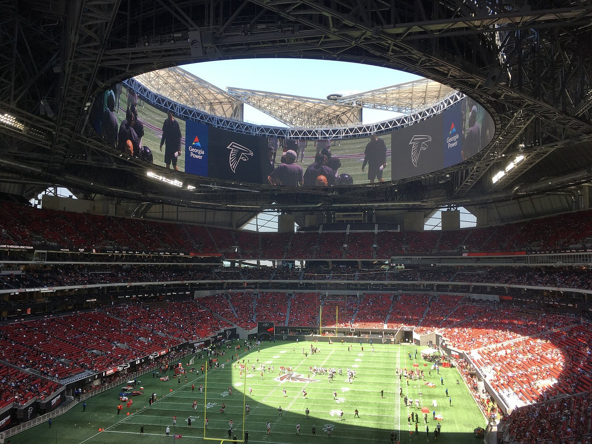

Sports · Other Sports
Super Bowl LXII
- Dates
- Dates TBA
- Venue
- Mercedes-Benz Stadium
- Location
- Atlanta, United States
- Format
- In-person
- Category
- Other Sports
- Industry
- American football
- Organiser
- National Football League
- Official website
- https://www.nfl.com/super-bowl/
About
Host city and stadium are official (Atlanta, Mercedes-Benz Stadium, 2028). The kickoff date had not been published on official NFL pages fetched 24 Nov 2026, so status is dates TBA.
Topics: Super Bowl, NFL, American football.
No organiser attendance figure found on the official pages fetched 24 Nov 2026 for this upcoming edition. Ranked by our estimated size tier 'large' (30,000-100,000 attendees/visits), a judgement from format, venue and scale, not an official number.
Sources
- Official — https://www.nfl.com/news/atlanta-to-host-super-bowl-lxii-in-2028
- Official website — https://www.nfl.com/super-bowl/